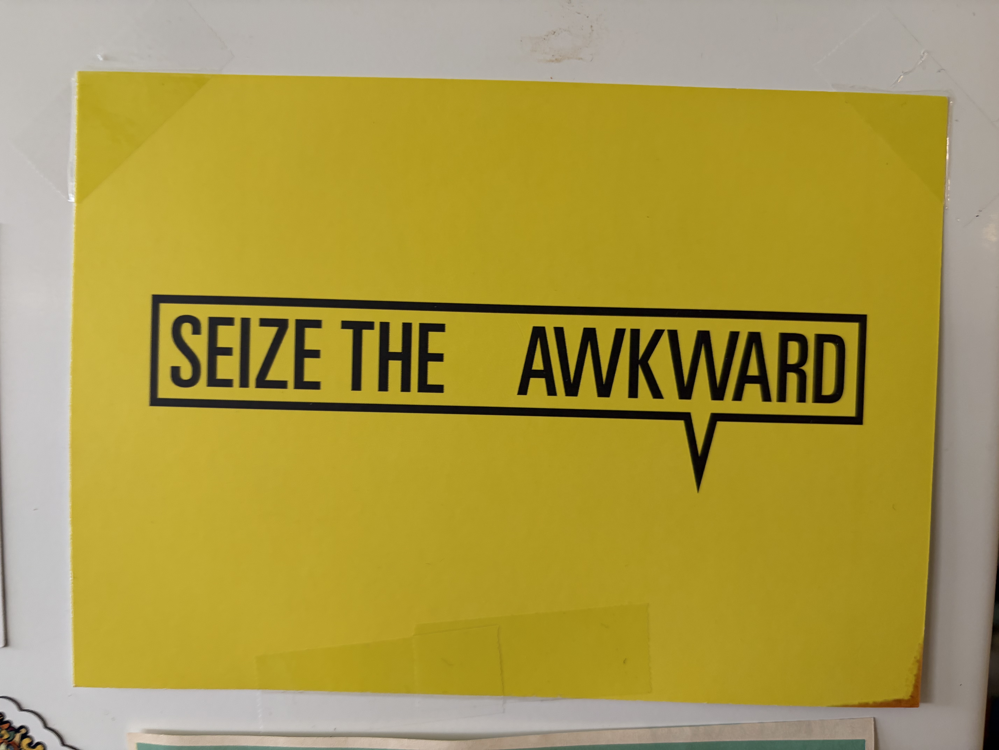
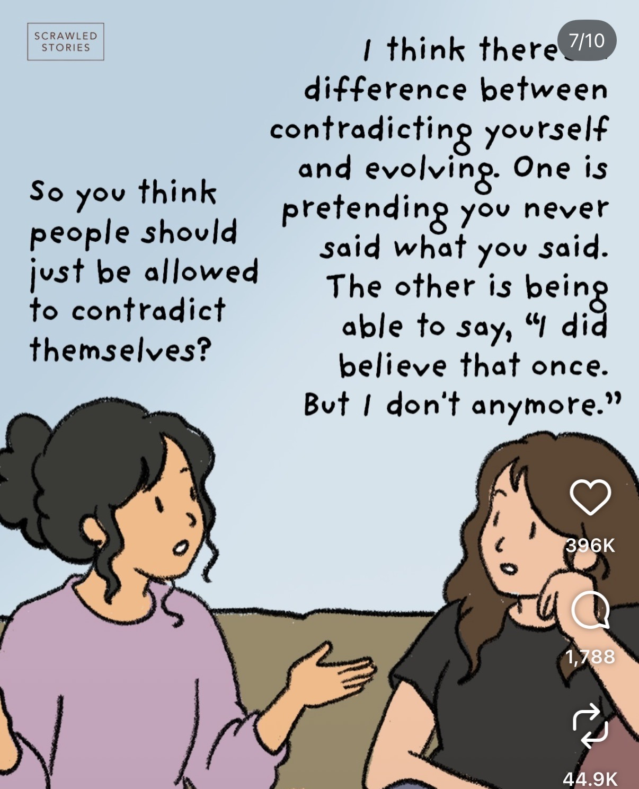
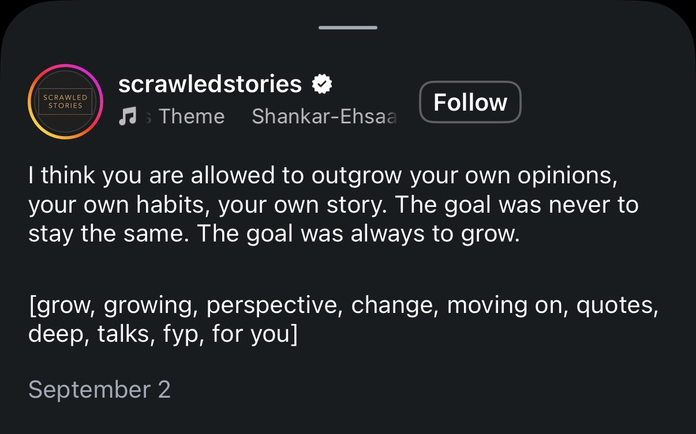
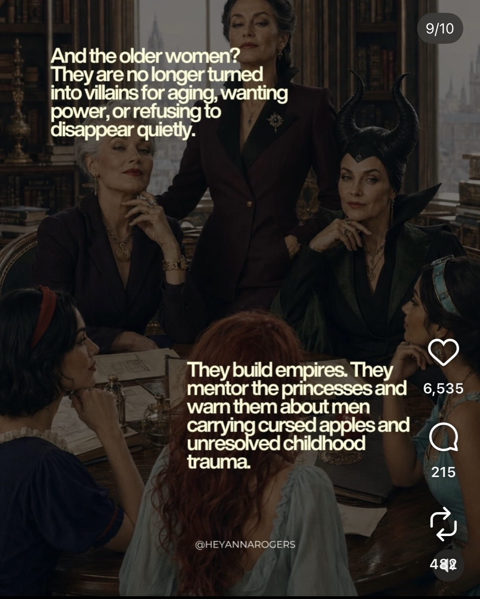
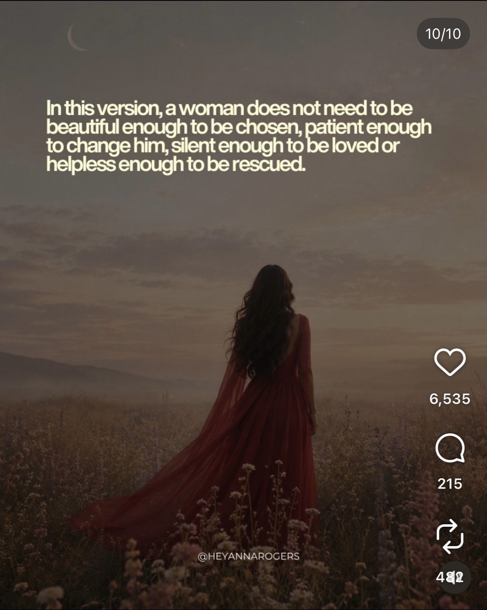

Empowering language. Resonated with me as a young adult. Encourages me to take back power in the awkwardness of not knowing, of being in the in-between, and to move with confidence anyway.

Posts about changing priorities, evolving beliefs, understanding ourselves differently, and recognizing that growing into adulthood can also mean becoming someone different from who we expected to be.

Empowering language. Resonated with me as a young adult. Encourages me to take back power in the awkwardness of not knowing, of being in the in-between, and to move with confidence anyway.

The shift from seeing contradiction to evolving. Here, beliefs over time don't have to be a contradiction but an evolution.

It is really interesting to me that it says, "The goal was always to grow." The implication is that we were never meant to stay the same. And there's something about that that I can't quite name, but it deserves to be.

I think becoming a young adult is seeing this shift. It's funny what perspective and growimg up reveals. At one point in time, they were villains. Now we see a reality where they are just women who have more experience than us who are trying to get a message across. Although, the other perspective makes for a far more emtertaining story. But the other is far more thought provoking. I guess it just depends on what you value more.

Perhaps sometime when we were little, we learned we had to be these things so people we would like us. So we could be successful. So we could be chosen. But as I grow up, I learn I am diverging from a lot of the thing I learned as a kid. I am becoming very different than who I pictured. And I guess that's the reality of becoming a young adult.

There's something empowering about being confident in a world that doesn't want you to, or better yet cannot afford for you to. To me, this resembles young adulthood. The housing market is astronomical. The job market is not any better. But being able to come out on top of the circustances feels extremely empowering.